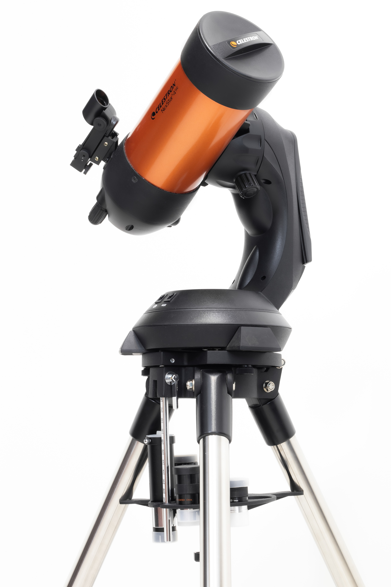

Equatorial mounts are superior to non-computerized Altazimuth mounts for astronomical observing over long periods of time and absolutely necessary for astrophotography. As the earth rotates around its axis, the stationary stars appear to move across the sky. If you are observing them using an Altazimuth mount, they will quickly float out of view in both axes. A telescope on aproperly aligned equatorial mount can be aimed at a celestial object and easily guided either by either manual slow-motion controls or by an electric motor.
Altazimuth (sometimes called alt-az) is the simplest type of mount with two motions, altitude (vertical) and azimuth (horizontal): thus the name Altazimuth. Good Altazimuth mounts have slow-motion knobs for making precise adjustments, aiding smooth tracking across the sky. These type mounts are generally good for terrestrial observing and for scanning the sky at lower power but not for deep sky photography. Some Altazimuth mounts are now computer driven and allow a telescope to track the sky more accurately. This is generally good for visual use but can lose tracking on longer exposure astrophotography. In addition to a standard Altazimuth, mounted on the top of a tripod, there is also the Dobsonian Mount.
The Dobsonian mount is a newer, modified version of the Altazimuth mount. This mount was invented in 1956 by John Dobson. Dobsonian mounts are mounted on the ground by a heavy platform, and designed to support massively sized Newtonian Reflectors, while keeping a steady image. It is common for Dobsonian telescopes to have very large apertures - anywhere between 6 and 20+ inches!
Did you enjoy learning and reading about telescopes?
If so you can check out the websites I got all the information you see here

MIRROR CLEANING & POLISHING: $99.99
MOUNT LUBRICATION & MAINTENANCE: $59.99
TRIPOD MAINTENANCE: $19.99
WEIGHT REPLACEMENT (WEIGHT PRICE INCLUDED): $199.99